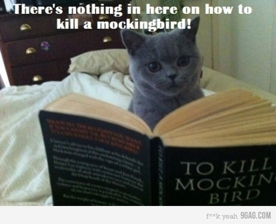

Day 41
Reading
- New book: Begin reading To Kill a Mockingbird by Harper Lee.
- Today, read as many chapters as you can.

Words of the Day:
Write the two words below in your vocabulary book along with their short definitions. Also, click on the link for each word, and read more about the definition.
- knell - the sound of a bell rung slowly to announce a death
- lithe - moving and bending with ease
Grammar
A preposition shows how nouns and pronouns relate to other words in a sentence. They often show where something is or when something happened. Example: We skated on the icy lake. The word "on" is a preposition. Together, a preposition, a noun or pronoun, and the words that describe the noun or pronoun make up a prepositional phrase. The words "on the icy lake" are a prepositional phrase.
- Brain Quest, p. 32 - Over Under
- Brain Quest, p. 33 - Where's Furious?
Writing
Try completing your writing assignment from last week. Start by writing down everything you remember about meeting other kids during reading time at Barnes & Noble. For example:
- Each Friday at 7:00pm, an employee read a story.
- They read classic stories like Cat in the Hat and new stories like The Day the Crayons Quit.
- Lots of kids of different ages came to story time.
- At the end, there was always a coloring sheet or activity to do.
Don't forget details!
- How did you feel every time you went to story time?
- Did you like introducing yourself to other kids?
- Who did you meet there?
Write down everything you remember even if it may not be relevant. Your writing does not need to be in paragraph form or even organized. This is the brainstorming part of the assignment. You will write the story tomorrow.
Math
Write the following problems in your notebook and solve:
- Without remainder:
- 18 ) 1692
- 16 ) 704
- 10 ) 770
- 17 ) 1122
- 10 ) 650
- With remainder:
- 44 ) 9489
- 38 ) 3410
- 22 ) 3824
Art
Draw some maple leaves:
- Follow these instructions to draw several maple leaves. Color each one differently (combinations or solid yellow, red, green, etc.)
- Cut them out carefully.
- Take a look at an example of a finished leaf here.
Day 42
Reading
- Continue reading To Kill a Mockingbird by Harper Lee.
- Read as many chapters as you can. You should finish the book by Friday.
Words of the Day:
Write the two words below in your vocabulary book along with their short definitions. Also, click on the link for each word, and read more about the definition.
- lurid - glaringly vivid and graphic; marked by sensationalism
- maverick - someone who exhibits independence in thought and action
Writing
Write your story using the method we discussed.
Math
Write the following problems in your notebook and solve:
- Without remainder:
- 14 ) 728
- 16 ) 912
- 11 ) 935
- 17 ) 1428
- 25 ) 5550
- With remainder:
- 42 ) 6084
- 22 ) 3182
- 31 ) 3442
Day 43
Reading
- Continue reading To Kill a Mockingbird by Harper Lee.
- Read as many chapters as you can. You should finish the book by Friday.
Reading/Vocabulary
- There are five genres of fiction: realistic fiction, historical fiction, mystery, fantasy, and science fiction.
- Brain Quest, pp. 76-7: What Kind of Story?
Reading/Writing
- William Shakespeare (1564 – 1616) was an English poet, playwright and actor. He is widely regarded as the greatest writer in the English language and the world's pre-eminent dramatist. He is often called England's national poet and the "Bard of Avon".
- A sonnet is a poem of fourteen lines using any of a number of formal rhyme schemes and in English typically having ten syllables per line.
- Read Shakespeare's Sonnet 18 and its explanation here. The sonnet is on the left; the explanation is on the right.
- Today you will write a parody to the opening of Shakespeare's sonnet 18.
- A parody imitates a poem, story, or other work in a funny way.
- Brain Quest, p. 107: Shall I Compare Thee to a Piece of Piece of Cheese?
- Write three possible openings. Make them as outrageous as you can. Have fun!
Words of the Day:
Write the two words below in your vocabulary book along with their short definitions. Also, click on the link for each word, and read more about the definition.
- maxim - a saying that is widely accepted on its own merits
- meticulous - marked by precise accordance with details
Social Studies
- Visit this site to learn more about the presidents of the United States.
- This week, learn about the eighth (Martin Van Buren) through the sixteenth president (Abraham Lincoln) only.
- A copy of the text for each president is in your folder.
Math
- Brain Quest, p. 155: Practice Makes Perfect
Day 44
Reading
- Continue reading To Kill a Mockingbird by Harper Lee.
- Read as many chapters as you can. You should finish the book by Friday.
Words of the Day:
Write the two words below in your vocabulary book along with their short definitions. Also, click on the link for each word, and read more about the definition.
- modicum - a small or moderate or token amount
- morose - showing a brooding ill humor
Writing
- Brain Quest, pp. 91-1: Choose Your Own Adventure
Math
- Brain Quest, p. 156: Best Guess
Science
- Brain Quest, p. 282: Neat Feet
- Brain Quest, p. 284: Biomes
Day 45
Reading
Words of the Day:
Write the two words below in your vocabulary book along with their short definitions. Also, click on the link for each word, and read more about the definition.
- myriad - a large indefinite number
- nadir - the lowest point of anything
History
Today we'll wrap up our section on the American Revolution:
- Summary: The American Revolution was the campaign by the American colonies to gain independence from Britain. It began in the 1760s when the friendly relationship between Great Britain and the colonies bacame strained. George III, the British king, needed money to pay for a recent war against the French and to help with the cost of ruling over Britain's huge empire. The king decided to tax the colonies to raise money. The colonists resented being taxed by the king when they had no say in government affairs. At first the colonists protested peacefully, but when Britain tried to punish Massachusetts for rebelling in 1775, the thirteen colonies united and the Revolutionary War broke out. The colonists eventually won the war against Britain and gained their independence.
- Watch this video. Remember to pause and take notes! You don't need to write down everything she says-- just enough to be able to review and remember.
Writing
- Imagine yourself as a superhero. You might be able to see through walls, fly, or swim like a fish. Write about your superhuman power and what happens when you use it.
After School/Weekend Project: Programming
- We will review concepts you have studied, set up a Github account, and continue learning about coding.